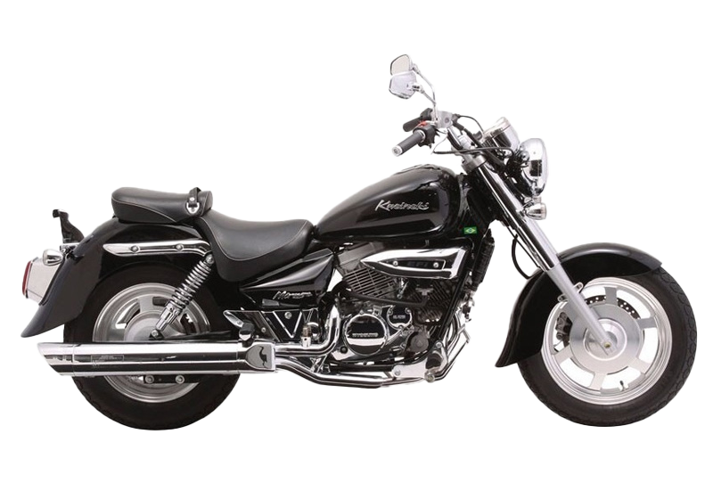

Mirage 250
Custom, Forte e Estradeira

Lançada em 2001 no Brasil pela Kasinski, a custom de origem coreana Mirage 250 sobreviveu 13 longos anos em nosso mercado. No entanto, assim como a marca nacional, o modelo se foi e deixou ainda mais escasso o nicho das pequenas clássicas por aqui.
- 2001 - Começo da Produção das Carburadas
- 2009 - Fim da Produção das Carburadas
- 2010 - Começo da Produção das Injetadas
- 2013 - Fim da Produção das Injetadas
Se interessou? Saiba mais aqui